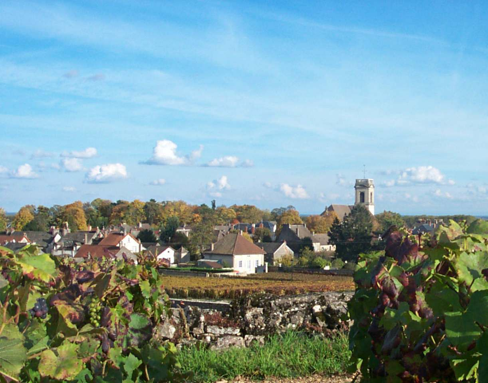

思宝酒庄
酒庄简介：
酒庄简介丝宝酒庄至今已第4代，位于博纳丘中心的玻玛。第一代庄主曾经担任名庄Chateau de Pommard及Clos de Tart的庄园。玻玛（Pommard）产区的土质为石灰岩和红粘土，使得该地区出产的酒是法国最知名葡萄酒之一。
《法国美食百科全书》口的品评专家Ronsard曾经这样评价玻玛4：“在这么一小块土地上，居然酿制出如此美味的葡萄酒，简直是太神奇了！" 随后他在书中写道：“玻玛酒是世界上著名的葡萄酒产区一勃良第最为优良的葡萄酒，醇厚味美，唇齿留香，展现出大将之风范。著名的法国品酒大师雷蒙。
杜梅曾说过：“波尔多酒的秘密在酒窖里，勃良第酒的秘密在土地里。”勃良第酒对土地的要求更高，酒的个性就在于“根”。这种对根的依赖使得玻玛（Pommard）产区酒农至今仍保留着浓厚的重农遗风，也使得这里酿造出天作的佳酿，这是上帝对玻玛（Pommard）的眷顾，也是玻玛（Pommard）对上帝的回报。
